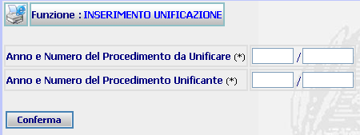

PULSANTE
DESCRIZIONE

Questo pulsante ha lo
scopo di stampare il contesto (videata)
INSERIMENTO UNIFICAZIONE DA VERBALE: La funzione consente di inserire l'anno/numero del procedimento sius che deve essere unificato (riunito) da verbale e l'anno/numero di quello unificante.
LE MASCHERE VIDEO
La funzione viene realizzata attraverso la maschera seguente in cui compaiono i campi dove va inserito l'anno/numero del procedimento sius che deve essere unificato e l'anno/numero di quello unificante

COME FARE PER ...
Per effettuare l'attività di unificazione da verbale l'utente deve compilare i campi Anno/Numero del procedimento Sius da unificare e di quello unificante e cliccare sul bottone
CAMPI
I campi da compilare sono i seguenti:
| Anno e numero del procedimento da Unificare (Anno/Progressivo) | Campo (obbligatorio) nel quale va inserito l'anno ed il numero del procedimento che si vuole unificare |
| Anno e numero del procedimento Unificante (Anno/Progressivo) | Campo (obbligatorio) nel quale va inserito l'anno ed il numero del procedimento al quale va riunito il procedimento precedente |
PULSANTI
E' presente il seguente pulsante facente parte del gruppo di pulsanti di "Uso Comune:
|
PULSANTE |
DESCRIZIONE |
|
|
Questo pulsante ha lo
scopo di stampare il contesto (videata) |
BOTTONI
Oltre ai comandi funzionali relativi al menù verticale è presente il seguente bottone:
|
COMANDI |
DESCRIZIONE |
|
|
A fronte di tale comando, il sistema dopo aver verificato la validità dei dati specificati, presenta una ulteriore maschera di inserimento unificazione |
CONTROLLI
Il sistema effettua i seguenti controlli:
| controlla l'esistenza in archivio del procedimento da unificare ed in caso contrario fornisce il seguente messaggio |
| controlla l'esistenza in archivio del procedimento unificante ed in caso contrario fornisce il seguente messaggio |
| controlla che il procedimento da unificare sia ancora pendente ed in caso contrario fornisce il seguente messaggio |
| controlla che il procedimento unificante sia ancora pendente ed in caso contrario fornisce il seguente messaggio |